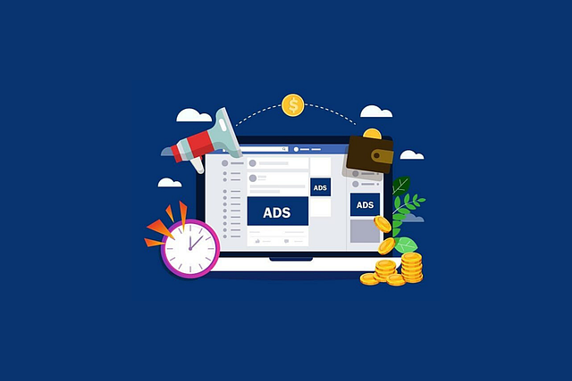
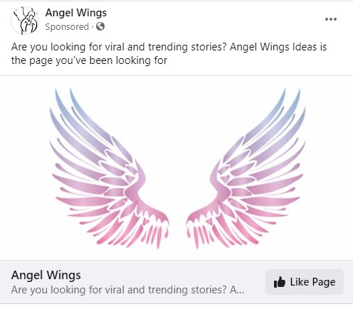
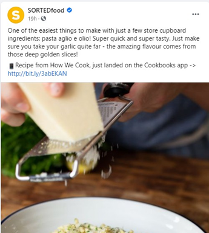

Facebook ads are a great source of new leads, but you won’t get the best ROI unless you’ve got the right ad campaign strategies in place.
If you’re just launching ads because you’ve heard it’s a good way to make sales, take a step back.
When you focus your time and ad budget on a better-managed campaign, you’re more likely to see great results that you wouldn’t get otherwise.
No matter what industry you’re in or what audience you’re trying to reach, there are strategies you can implement to knock your next ad campaign out of the park.
First Things First – Defining Your Campaign Goals
All ad campaigns should be built up from a specific goal.
Goals are what you are working to achieve through the ads you’re launching.
Most ad campaigns are made with ROI in mind. The specific intention is centered on increasing revenues. This is a fine goal, but you have to take the time to define the numbers you’re looking for so you can actually monitor the success of your campaign as it’s happening.
There are a few layers to a revenue goal with Facebook ads. For example, if you just say you want to increase revenues, you may not get a complete picture of your ROI until the campaign is over and you can tally your ad spend versus revenues generated.
Instead, you should define all the numbers you need ahead of time.
If you want to generate revenues of $5,000 from an ad campaign, how many conversions would you need to meet that goal? With your average conversion rate, how much reach do you need to get your desired conversion numbers? This will help you determine a good budget for your campaign.
Non-monetary goals are also possible with ad campaigns. For instance, if you’re doing a brand awareness campaign, engagement is a better metric because you’re not likely to see a high revenue return.
Aligning Ad Goals with Your Business Goals
Ad campaigns serve a purpose for your business at large. You don’t run ads in a bubble.
Make sure your Facebook ad campaign ties into your greater marketing goals.
If you’re looking for revenues, base your ad revenue goals on your overall business revenue goals. If you’re looking for awareness, make sure reach and engagement are translating well into your overarching strategy.
As long as you can measure what you’re doing and demonstrate how it’s assisting you in reaching your business goals, you’re on the right track.
A Broad Target Audience Means No Target Audience
One of the most expensive mistakes you can make with Facebook ads is casting too wide of a net. It’s easy to waste your budget on sending your ads to anyone and everyone, even if they’re not a good lead.
Facebook ads can have a high reach, but that’s not always a good thing for you. Reach doesn’t translate into conversions unless you’re reaching the right people.
When you’re setting up your audience parameters, be as narrow as possible. Start out with broad demographics that apply to a large chunk of your potential customers, then keep working on the profile until it singles out only the most promising leads with buyer’s intent. This is all part of a good sales process.
Example: Narrowing Your Audience
You’re running ads for an online-only cosmetics shop. Start by broadly narrowing down your audience based on wide metrics such as shipping locations, gender, or age.
Next, you want to put more specific layers over the broad filtration. Facebook ads let you narrow it down based on an enormous variety of interests and characteristics. What you choose will largely depend on what you’re offering and what your ad is trying to accomplish.
Ads selling a specific product or line of products should narrow down the ad audience to target people who might be most interested to purchase that product. For example, if your ad is about waterproof makeup, you may want to specifically target athletic women or those living in hot environments as this group is more likely to find value in your product.
For ads that are building brand awareness, you want the audience to match your target client persona as closely as possible. Consider your general marketing strategy and image as well as the value of UX user research. Who are you trying to sell to? If you have a client persona built out already, use that to narrow your audience.
There is a risk of over-filtering, but it’s easier to correct for an audience that’s too small than one that’s too large.
By setting up your ads to target a specific group of people, you’re more likely to get your money’s worth instead of accidentally overspending on advertising to a broad, disinterested group of people.
📌 Note: Facebook’s Dynamic Ads do help sometimes when you want to reach as many as possible with ads on autopilot. However, it might be a more expensive solution and it still may not narrow down your ad targeting enough.
Drive Customers to Specific Actions, Not Your Website
This tip is fairly self-explanatory, but let’s take a little bit of a closer look anyway.
All Facebook ads should contain a call to action (CTA). The best way to do a CTA is to lead someone directly to a specific action, not just link them to the homepage of your website.
Create dedicated landing pages for your ads, link to product pages where people can buy your products or link to direct download pages for free lead magnets or webinars.
CTA buttons on Facebook ads can display any text and lead people virtually anywhere, so why not use that to bring them exactly where they need to go to convert? Use direct CTAs like “book now”, “click to download”, or “shop now”.
Sending people to your website puts more steps between a person seeing your ad and converting. Using a direct CTA cuts out the middleman and allows for seamless conversions.
A/B Test Your Ads
A/B testing is a fancy way of saying you’re testing two different versions of the same ad and comparing them to see which one was most effective.
You should be doing A/B testing in almost every part of your digital marketing, but it’s especially important with ads. Since you’re spending your money on leads and conversions generated by the ads, you need to get the most out of it.
A/B testing answers questions like:
- Which type of media do people respond better to?
- What kind of call to action drives more engagement?
- How does your audience respond to a specific ad delivery?
A/B testing doesn’t work in every scenario. For example, A/B testing may not be ideal when:
- You have a relatively small amount of traffic and conversions
- You don’t have a specific hypothesis to test
- You’re testing things that won’t provide value to your ad campaign
- You have a small Facebook ads budget
Luckily, Facebook makes it really easy to do A/B testing. They have a page showing you all the different ways you can do A/B testing on their platform. Use their built-in testing systems to test multiple versions of your ads and find out which ones give you the best ROI.
Focus your budget on the best ads.
Understand and Utilize Funnels
Funnels are everywhere. You might have a broad customer journey funnel and funnels for converting email marketing leads or upselling. Now, it’s time to look at how Facebook ad funnels work.
Within Facebook’s ad platform, you have the opportunity to retarget people with different ads at different times, allowing you to slowly build up to a sale instead of leading off with a direct sale ad.
Converting a Stranger into Your Customer
Facebook ad funnels look generally like this:
- Introduction to your brand, products, or services
- Building interesting in what you’re offering
- Pitching the purchase
- Ongoing customer relationship-building
Introductions
Introductory ads are your first step towards bringing people into the funnel. These are the broad reach ads you’ll send out that give a top-level introduction to how you can serve people.
Here’s an example of an introduction ad:

This ad gives a short introduction to the main service offered. The CTA is to like the company’s Facebook page. When people engage with introductory ads, then you can move on to the next stage of the funnel.
Building Interest
Interest-building ads aim to educate potential customers and get them more invested in the brand, products, or services.
These ads help nurture leads and turn cold leads into people with some buying intent by showing them the value you’re offering, how you have helped other people, and what you can do for them.
Example of an ad building interest:
This ad relies on intense visuals to grab your attention. The text is educational, leading with a hook that draws you in, assuming you have an interest in the topic (that’s why targeting matters!).
The purpose of this ad isn’t to drive sales immediately, but to nurture leads and keep yourself in their line of sight.
Pitching the Purchase
When you pitch a purchase, you are asking someone to buy from you. On Facebook, one of the most effective ways to do that is with a sale.
Example of a purchase ad:
This ad offers an incentive for immediate action, gives the viewer a way to use that incentive, and provides pressure by letting you know it’s a limited-time offer.
Buyers with an existing interest in the brand or product might be driven to make a purchase when it’s pitched like this, as long as some foundation has already been established.
Nurturing Leads
Ads that continue an ongoing relationship with an existing customer might look like any of the above ads, but with specific targeting for those who have already made purchases from the company.
There might be ads introducing new services or products from the same company, further educating customers on how to use the company’s products or services more effectively, and special sales or discounts for returning customers.
Some examples that could be considered nurturing ads:
This ad speaks to people who have already been using the service as well as new leads. The company is now letting you know that they’ve expanded their service to offer more than they did before.
It’s a good format for both new and existing customers.

This ad is continuing to educate customers while also pointing towards a new product the company just released. It’s a great way to maintain ties with customers who are already interested in what you’re offering.
Ads work well in combination with lead magnets on your website or specific landing pages. For example, if your ads drive people to a page in your online shop, you can have a lead magnet in place to offer them a discount in exchange for an email address. You don’t need to stick to the Facebook ads funnel exclusively.
Funneling customers help you approach them with the right messaging at the right time instead of just throwing ads in their feed blindly. Build and maintain a Facebook ad funnel as soon as possible.
Keep an Unbiased Customer Perspective
A problem many businesses share is that over time customer voices can get drowned out. Even if you put in systems to get customer opinions and perspectives, those initial responses might be tainting your view of what’s happening with your customers right now.
In order to reach your audience with ads that offer value, you need to understand what your customers would find valuable.
The good news about bias is you can correct it.
One of the simplest ways to figure out what your customers think is to ask them. Customer feedback surveys can give you valuable data to help you tailor your Facebook ads more accurately.
Ask questions that will give you useful answers. Avoid questions that add a layer of bias or prompt unhelpful responses. These include leading questions, loaded questions, confusing questions, multi-layered questions, and absolutes.
Another way to remove your own bias from the customer perspective is to bring in people who work in all different levels of the funnel. If you work with a team, you want to get input from those who are involved in customer acquisition, education, conversion, and retention.
Combining the perspectives from each level of the funnel may help you build a more complete version of what your customers are thinking.
Attract and Retain Attention
The quality of graphics you use in Facebook ads makes a huge difference.
A good social media graphic can make someone stop scrolling and engage. With more than 6 million businesses using Facebook ads, you need to do something to stand out.
Smart Insights recommends that graphics for Facebook ads have these characteristics:
- Product pictures, not just stock images
- Legible text that’s easily scannable
- Bold backgrounds behind the text, especially in dark colors
- Icons and graphics to increase personability, but don’t overdo it
Video is another way to grab attention. In 2016, eMarketer reported that the average engagement rate for native video on Facebook was 6.3%, compared to 3.2% on YouTube and 3.6% on Instagram. The exact numbers have likely changed a little since then, but Facebook videos remain a powerful way to drive engagement.
Balance graphics and videos. While videos have great engagement, they have lower click rates on CTAs than images. Use different types of media that align well with the purpose of the ad.
Also, remember that Facebook is often accessed from mobile devices. As of October 2020, 79.9% of people worldwide accessed Facebook exclusively through mobile devices. This means you need to optimize your graphics for mobile viewers, not just desktop viewers.
Don’t Neglect Anyone
Sometimes even a tiny step can make a big impact on your ad campaigns. In this case, the step you need to take is optimizing your ads for different devices.
With so many people using mobile devices to access Facebook, you can’t afford to have ads that only work well and look good on specific sizes or types of devices.
Test your ads on screens of different sizes and on both Apple and Android devices. You don’t necessarily need to make unique ads for each category, just modify your existing ads so they look good and function like they’re supposed to on all platforms and devices.
Start Using Facebook Pixel – Immediately!
Pixel is Facebook’s analytics tool. This tool helps you measure and track everything that’s happening with your ads and your page. It also works as a way to track what happens to people who visit your website from Facebook.
Using Pixel, you get access to a ton more analytical information that’s going to give you a decision-making edge.
For example, stats from Pixel can give you a good idea of the true conversion rate from your ads while also helping you build stronger remarketing campaigns.
If you’re not already using Pixel, set it up ASAP.
Last, But Not Least – Get Connected to Instagram
Facebook acquired Instagram in 2012 and has slowly integrated many of the services. You can integrate your Facebook and Instagram ads for the biggest impact on both platforms as well as a larger pull for analytics data.
To get your ads on Instagram, you have to start with a Facebook page. Since you’re reading about Facebook ads right now, it’s a safe assumption that you already have one of these. Once you have that setup, you need to launch an Instagram business profile.
Business accounts on Instagram are free. You can create a page in a matter of minutes, seeing as there are only 3 fields you have to fill out!
Once you have an Instagram business profile, you can connect it to your Facebook ads manager. From there, you’ll be able to manage campaigns for both Facebook and Instagram, either running the same ads on both platforms or creating unique ads for each.
Instagram has some specialty ad types that Facebook doesn’t offer, like interactive story ads, so you may want to look into these specifically.
It’s that simple. You can publish ads on two different platforms simultaneously to boost your reach and touch different segments of your audience.
Final Thoughts
Ad campaigns don’t need to be overly complex. But, by putting a bit of extra thought into it upfront you can boost your ROI and avoid a rapid scramble to fix your Facebook ads campaign halfway through.
About the Author
Maria Mladenovska is a Content Manager at DigitalNovas – an online guide about how to become a digital marketing expert. She is passionate about marketing and her curiosity to learn is ever-evolving. She focuses specifically on writing and editing engaging articles, blog posts, and other forms of publication.
Leave a Reply